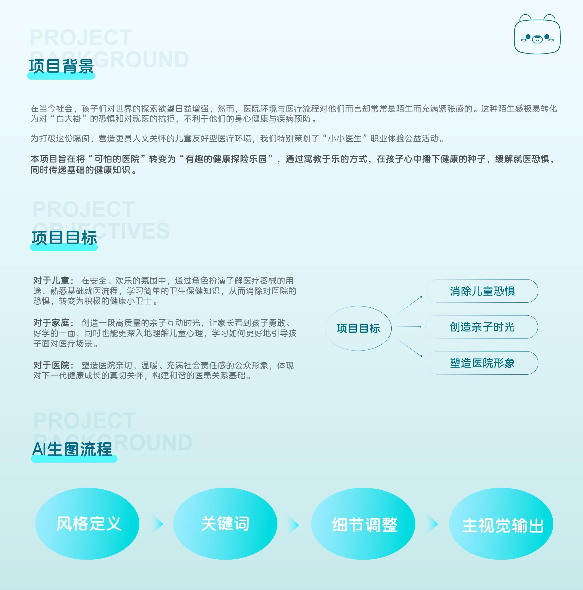
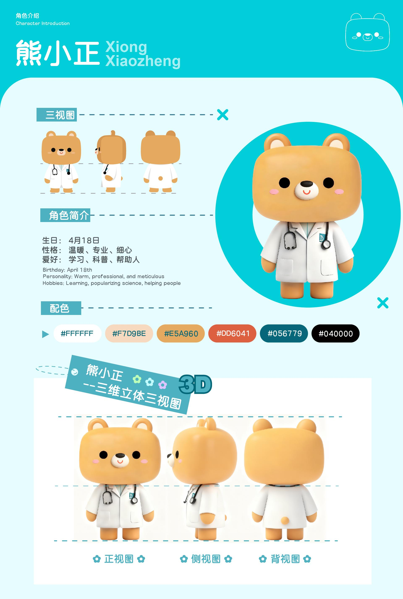
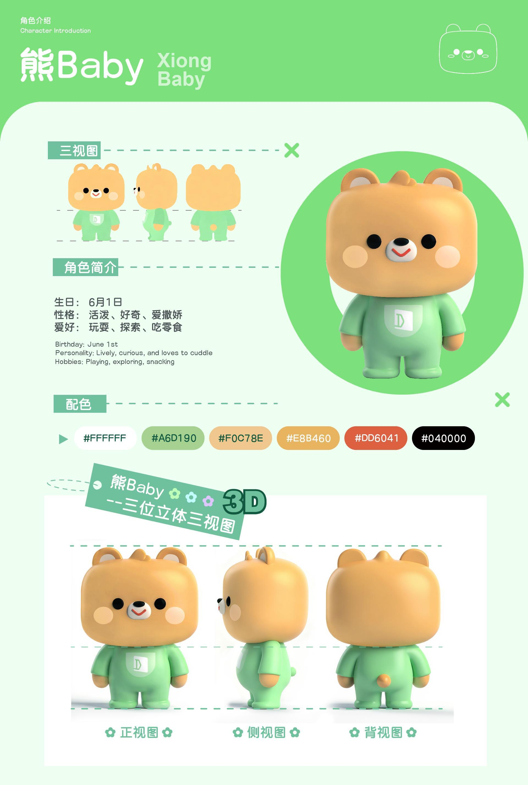
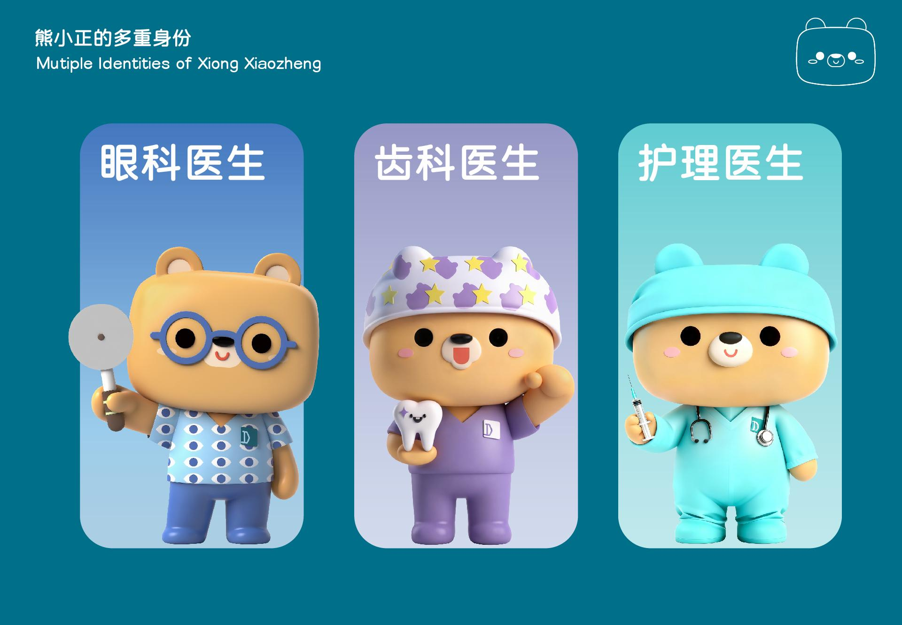
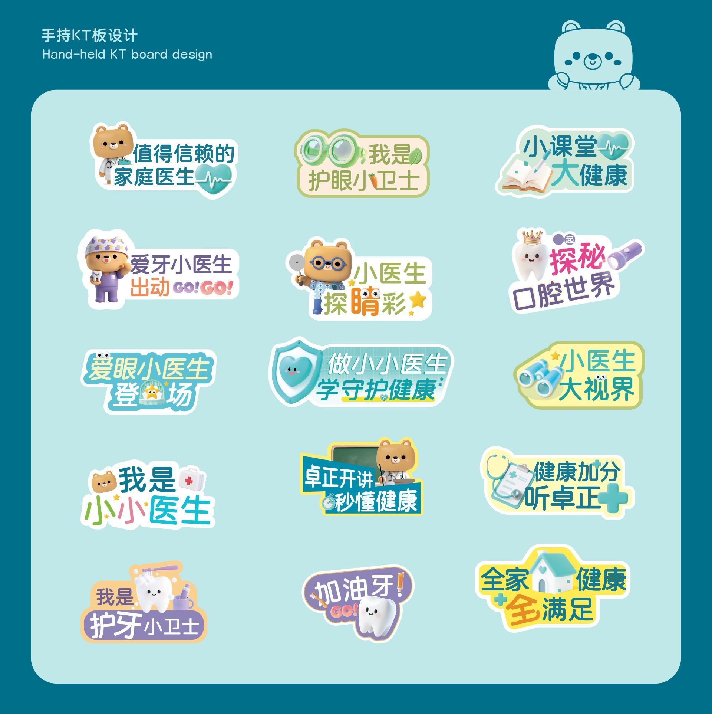

MEDICAL IP CREATION
小小医生 Little Dr. Bear.
守护童心的治愈力量。
将专业医疗与温暖熊设结合，用童趣的视觉语言化解儿童对就医的恐惧感。
RoleLead IP Designer
ConceptMedical / Healing
ToolsPs, Ai, Blender
Year2023
PHASE 01
Project Background & Process

PHASE 02
Character Design
角色三视图与变装设定



PHASE 03
Applications & Key Visual

Scroll for Details ↓

Next Project